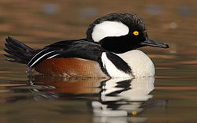
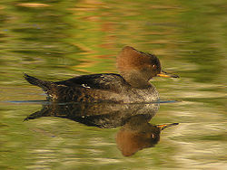
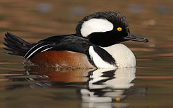
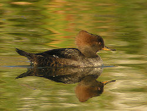

| Hooded Merganser | |
|---|---|
|  | |
| Male | |
|  | |
| Female | |
| Conservation status | |
| Binomial name | |
| Lophodytes cucullatus (Linnaeus, 1758) |
|
| Synonyms | |
|
Mergus cucullatus |
| Hooded Merganser | |
|---|---|
|  | |
| Male | |
|  | |
| Female | |
| Conservation status | |
| Binomial name | |
| Lophodytes cucullatus (Linnaeus, 1758) |
|
| Synonyms | |
|
Mergus cucullatus |
The Hooded Merganser (Lophodytes cucullatus) is a small duck and is the only member of the genus Lophodytes.
Hooded Mergansers have a crest at the back of the head which can be expanded or contracted. In adult males, this crest has a large white patch, the head is black and the sides of the duck are reddish brown. The adult female has a reddish crest, with much of the rest of the head and body a greyish-brown. The Hooded Merganser has a sawbill but is not classified as a typical merganser.
Hooded Mergansers are the second smallest species of merganser, with only the Smew of Europe and Asia being smaller, and is also the only Merganser restricted to North America (naturally anyway).
Their breeding habitat is swamps and wooded ponds on the northern half of the United States or southern Canada. They prefer to nest in tree cavities near water but will use Wood Duck nesting boxes if available and unoccupied. They form pairs in early winter.
Hooded Mergansers are short distance migrants and winter in the United States wherever winter temperatures allow for ice free conditions on ponds, lakes and rivers.
A few of these ducks have occurred as vagrants to Europe, however, this attractive species is so common in captivity that most birds seen in the wild in Europe are simply escapees.
These ducks feed by diving and swimming under water to collect small fish, crustaceans and aquatic insects.
A species of fossil duck from the Late Pleistocene of Vero Beach, Florida, was described as Querquedula floridana (a genus now included in Anas), but upon reexamination turned out to be a species closely related to the Hooded Merganser; it is now named Lophodytes floridanus, but the exact relationship between this bird and the modern species is unknown.

{kind=link}
{kind=link}